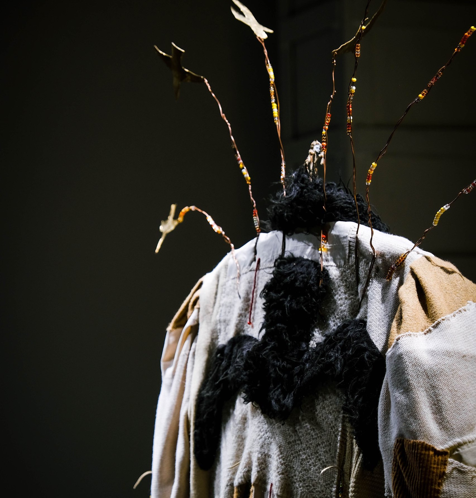
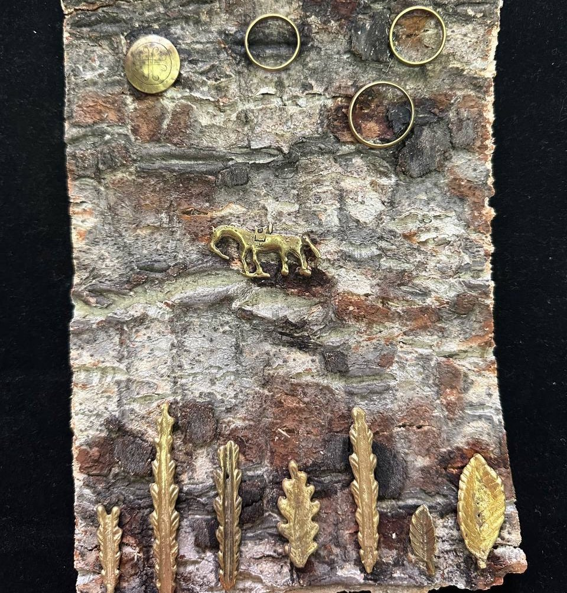

"...individuality is a significant feature of heterotopia in social space. Individual space is effectively enhanced by the accumulation of personal knowledge. Personal knowledge and creativity are particularly significant in the heterotopic space, which is indefinite under modern conditions." Alexander Milykh The panel was created as part of the exhibition-laboratory, the experiment "Archetypes of Memory", dedicated to the space of workshops in the 'House of the Artist', where the process of the city's artistic life has been concentrated for over half a century. The project was based on the task of mastering the complex, multidimensional space of the House of the Artist, through the localization of its meanings in one place, elevating this place to the status of a temporary dominant. Through meetings and artistic reflection, individual and collective dialogues were formed with the content of what is inside and around each author. An opportunity arose to explore ways of coexistence in different layers of time and interpersonal connections. The panel became the result of collaborative work between artists and visitors; elements of the composition emerged intuitively at the subconscious level, as if words and phrases manifesting through the layers of new texts in the palimpsest. In this collective object, we address the layer of the cultural landscape that is site-specific not in relation to the territory's context, but in relation to the individual's internal space. We are currently considering artistic research into people's lives in territories linked to their ancestors and art oriented towards internal contents from the perspective of 'co-relation' with the place, thereby transitioning to the existential aspect of landscape perception. The exploration of the world, surrounding humans, from the perspective of the influence of artistic imagery on psychological and philosophical perceptions of life has long been associated with mythical consciousness. The animating of the landscape, the animal world and the elements constructs a certain understandable system of coordinates, while the sacralization of personal territory – 'alaas', leaves a trace in genetic memory and manifests itself across generations.


UMUU, 2022.


“Күн дьөһөгөй” (незнаю как перевести), 2023